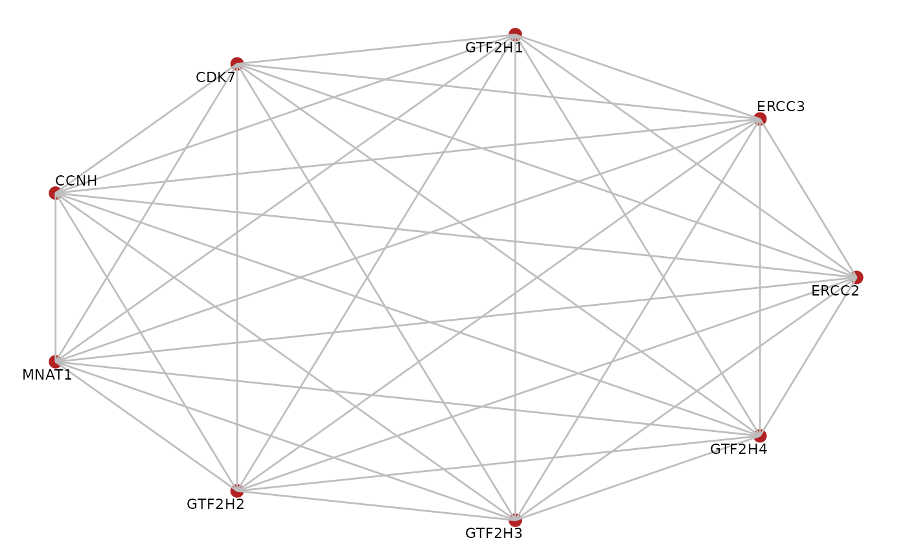

plotGraph.RdPlotting utility for graphs
graph. An object of class graphNEL from the graph package.
character. A node data attribute that is used to label the nodes.
character. A node data attribute that is used to overlay on the nodes using different colors.
character. An edge data attribute that is used to overlay on the edges using different line types.
character. Default color for the nodes. Is overwritten by
node.data if not null.
character. Default color for the edges.
character. Whether to display directed or undirected edges.
character. Circular layout or network layout.
A ggplot.
library(BioPlex)
corum.df <- getCorum("core")
#> Using cached version from 2023-01-14 23:43:08
corum.glist <- corum2graphlist(corum.df)
gr <- corum.glist[["CORUM107_TFIIH_transcription_factor_complex"]]
plotGraph(gr, edge.mode = "undirected",
edge.color = "grey", layout = "circle")
